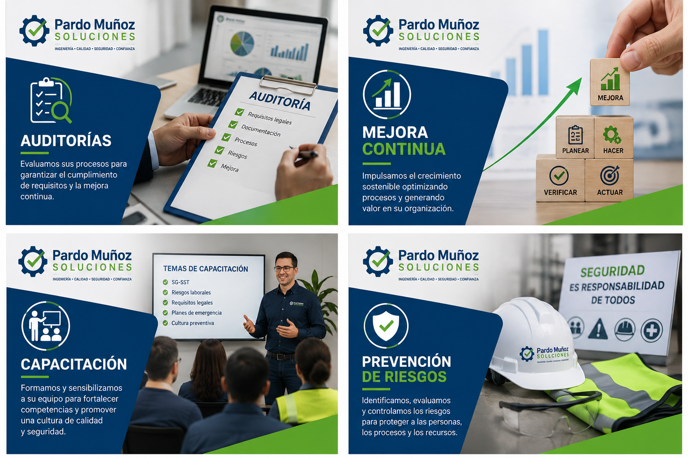

Ingeniería • Calidad • Seguridad • Confianza
Pardo Muñoz Soluciones brinda asesoría, consultoría, implementación, auditoría, capacitación y acompañamiento en Sistemas Integrados de Gestión, con énfasis en SG-SST, ISO 9001, ISO 45001 y requisitos legales.
Solicitar asesoríaAcompañamos a las organizaciones para cumplir requisitos, prevenir riesgos, optimizar procesos y fortalecer una cultura de calidad, seguridad y mejora continua.
Asesoría, implementación, auditoría, capacitación y acompañamiento en Sistemas Integrados de Gestión, con énfasis en SG-SST, ISO 9001, ISO 45001 e implementación de requisitos legales.
Brindar soluciones integrales en consultoría, asesoría e implementación de Sistemas de Gestión que permitan cumplir la normatividad vigente, optimizar procesos, reducir riesgos y fortalecer la mejora continua.
Para el año 2031, ser reconocida como una empresa líder en Colombia en consultoría de Sistemas de Gestión, destacándose por excelencia técnica, innovación y compromiso con el crecimiento sostenible de sus clientes.
Soluciones integrales para ayudar a su organización a cumplir, mejorar y crecer.
Diagnóstico, documentación, matriz de peligros, matriz legal, planes de emergencia, indicadores, capacitación e investigación de accidentes.
Diseño e implementación del Sistema de Gestión de la Calidad, documentación de procesos, indicadores, auditorías y mejora.
Implementación, diagnóstico, identificación de peligros, documentación, auditorías y seguimiento del Sistema de Gestión.
Evaluación de fortalezas, incumplimientos, riesgos y oportunidades de mejora.
Formación adaptada a las necesidades de cada organización en SST, calidad, riesgos y Sistemas de Gestión.
Consultoría mensual e integración de Sistemas de Gestión para lograr una administración organizada y eficiente.
En Pardo Muñoz Soluciones combinamos auditoría, mejora continua, capacitación y prevención de riesgos para fortalecer la gestión y la seguridad de las organizaciones.

Acompañamos organizaciones de diferentes sectores con soluciones prácticas y personalizadas. En el caso de las empresas, nuestros servicios están dirigidos principalmente a organizaciones clasificadas en niveles de riesgo I, II y III.
Fortalecemos SG-SST, ISO 9001, ISO 45001, gestión de riesgos, cumplimiento legal y mejora de procesos.
Fortalecer mi empresa →Acompañamos colegios, universidades y centros de formación en SG-SST, riesgos, plans de emergencia, requisitos legales y capacitación.
Proteger mi institución →Fortalecemos Sistemas de Gestión, SG-SST, ISO 9001, auditorías, indicadores y cumplimiento legal.
Mejorar mis procesos →Soluciones para seguridad, gestión documental, procesos, prevención de riesgos y mejora continua.
Organizar mi empresa →Soluciones prácticas y adaptadas para organizar procesos, gestionar riesgos, cumplir requisitos y crecer sosteniblemente.
Quiero asesoría →Acompañamos parroquias, diócesis, comunidades religiosas y organizaciones vinculadas a la Iglesia Católica en SG-SST, prevención de riesgos, planes de emergencia, capacitación y organización de procesos.
Proteger nuestra comunidad →Metas que orientan nuestro crecimiento y nuestro compromiso con los clientes.
Posicionar a Pardo Muñoz Soluciones como una marca reconocida en Colombia por la calidad y confiabilidad de sus servicios.
Alcanzar 50 clientes activos durante los primeros dos años.
Mantener un índice de satisfacción superior al 95%.
Ampliar progresivamente el portafolio con nuevas normas ISO y servicios especializados.
Los principios que orientan nuestro trabajo.
Honestidad, transparencia y ética profesional.
Cumplimiento serio de nuestros compromisos.
Servicios confiables y orientados a resultados.
Nuevas alternativas para mejorar continuamente.
Dedicación y responsabilidad en cada proyecto.
Relaciones basadas en respeto y transparencia.
Soluciones acordes con la realidad de cada organización.
Evaluación, aprendizaje y optimización permanente.
¿Necesita fortalecer su SG-SST, implementar un Sistema de Gestión o mejorar sus procesos? Comuníquese con Pardo Muñoz Soluciones. Estamos listos para conocer sus necesidades.
Comuníquese directamente con nuestro equipo para solicitar información y asesoría.
💬 Solicitar asesoría por WhatsAppEnvíenos su consulta o solicitud de asesoría directamente por correo electrónico.
✉️ Enviar correo pardomunozsoluciones@gmail.com